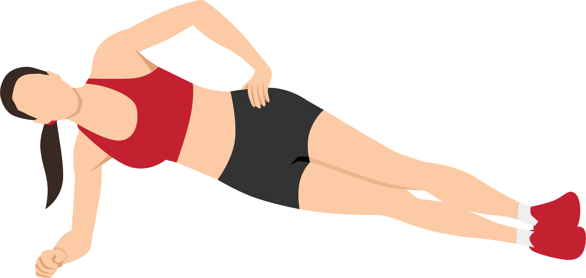

- Lay on one side with knees slightly bent.
- Engage your lower abdominal muscles and your pelvic floor. While keeping your feet together you will lift your top knee up only as high as comfortable without rocking your hip backwards.
- Hold your knee up 3-5 seconds and then slowly lower back down.
- Perform 10-20 reps on one side and then switch and perform with your other side.